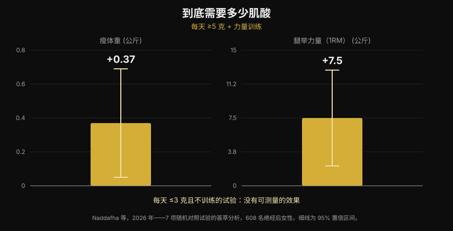
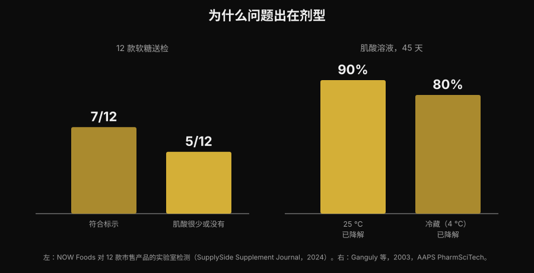

肌酸软糖有用吗？和肌酸粉比效果如何
嚼两颗软糖，就不用再对着杯底那层化不开的粉。这个卖点很方便，"creatine gummies" 的搜索量也涨了 279%。但真正的问题不是肌酸有没有用——这件事文献三十年前就讲完了——而是那些软糖里到底有没有标签上写的那么多肌酸。这方面有数据，而且数据不好看。

要点速览
- 针对软糖的研究确实有，结果也是正面的。 十周，每天 5 g 一水肌酸软糖：32 名沙滩排球女运动员的垂直跳和变向速度比对照组有改善。
- 但那项研究用的是实打实的 5 g。 最新的荟萃分析发现，每天 ≥5 g 配合力量训练，瘦体重 +0.37 kg、腿举 +7.5 kg；每天 ≤3 g 且不训练的试验里，没有可测量的效果。
- 很多软糖里并没有它声称的东西。 一次实验室检测买了 12 款在售产品，其中 5 款肌酸很少甚至为零——而且这 5 款里都检出了肌酸酐。
- 肌酸酐不危险，只是没用。 它是肌酸的降解产物：在罐子里看到它，说明肌酸在你买到之前就已经跑掉了。
- 化学解释了原因。 干粉状态的肌酸很稳定，溶液里不稳定。常温水中 45 天会降解 90%。
软糖为什么突然到处都是
原因不是科学，是方便。肌酸粉有三个现实缺点：要称量、要溶解，水一凉就沉在杯底结成颗粒。软糖一次解决这三件事，能塞进包里，而且看起来像糖而不像补剂。维生素 D 和鱼油走向咀嚼形式，靠的是同一个机制。
结果就写在搜索量里："creatine gummies" 现在每月约 165,000 次搜索，增长 279%，而 Google 首页几乎全是卖这个产品的网站排行榜。那些页面里几乎没有一个给出两个关键数字：到底需要多少肌酸，以及产品里真的有多少。
好消息：已经有一项软糖研究
以前你问"有用吗"，得到的是类推式的回答：里面是一水肌酸，一水肌酸有用，所以软糖有用。现在有一项研究直接测了这个形式。
32 名沙滩排球女运动员（大学生和职业选手）被分到每天 5 g 一水肌酸软糖组或对照组，持续十周。肌酸组的反向纵跳（p < 0.001）和变向速度（p = 0.009）都有改善，对照组没有改善甚至变差；脂肪量和体脂率也出现了有利差异。而瘦体重、骨骼肌质量和反应时间没有差异（Pereira et al., 2026）。
这个结果和所有肌酸粉文献一致，它说明一件简单的事：软糖不会破坏这个分子。只要肌酸在里面、而且量够，载体不是问题。于是全部问题都落到两个条件上：在不在，够不够。
剂量就是全部
要记住的数字是每天 5 g。这是国际运动营养学会（International Society of Sports Nutrition）官方立场声明给出的维持剂量，也正是那项软糖研究用的剂量。负荷期（每天每公斤体重约 0.3 g，持续 5–7 天）能更快填满储备，但不是必须的：每天 3–5 g 吃几周也能到同一个位置（Kreider et al., 2017）。
低于这个门槛，情况就变了。一项纳入 7 项随机试验、608 名绝经后女性的系统综述加荟萃分析发现，当肌酸每天超过 5 g 并配合抗阻训练时，获益很明确：瘦体重 +0.37 kg（95% CI +0.05 到 +0.69），腿举 +7.5 kg（95% CI +2.2 到 +12.8）。而在每天 ≤3 g 且不训练的试验里，没有可测量的效果（Naddafha et al., 2026）。

同一个数量级也出现在一项针对 20 名素食成年人的三盲试验里：四周，每天每公斤体重 0.1 g——70 kg 的人约 7 g——骨骼肌质量增加 0.3 kg，跳跃表现改善，肾功能指标没有变化（López-Moreno et al., 2026）。
下面是实际的算账，这也是软糖要仔细看的原因。按单颗软糖标注的含量，每天得吃多少颗才能到 5 g：
| 单颗软糖标注的肌酸 | 每天到 5 g 需要几颗 |
|---|---|
| 0.5 g | 10 |
| 0.75 g | 7 |
| 1 g | 5 |
| 1.25 g | 4 |
| 1.5 g | 4（3.3 向上取整） |
| 2 g | 3（2.5 向上取整） |
Nurvan 计算：5 ÷ 单颗标注克数，向上取整。单颗克数要看你手里那盒产品的标签。
重点不是这个数字本身，而是包装正面写的建议份量几乎从不等于 5 g。如果产品写"每天 2 颗"，每颗标注 1 g，你每天只吃了 2 g：正好落在荟萃分析里没有产生可测效果的区间。
真正的问题：里面到底有什么
这里就到了联盟营销排行榜不会讲的部分。一家工业实验室在 Amazon 和厂商官网买了 12 款肌酸软糖做分析。7 款符合标签声称，有些余量还很足。另外 5 款肌酸很少甚至没有。而且这 5 款里全都检出了肌酸酐，量从少到可观（NOW Foods 检测，由 SupplySide Supplement Journal 报道，2024）。

肌酸酐是肌酸降解的终产物。它不是毒——你的身体每天都在生成和排出它——但它没有任何运动增能作用。在补剂里发现它只说明一件事：那些肌酸在进你嘴之前就已经降解，你买的是一颗糖。
为什么偏偏是软糖？是化学原因，不是商业原因。干粉状态的一水肌酸非常稳定，溶液里不稳定。一项稳定性研究把肌酸配方溶在 pH 6.2 的水里，连续 45 天测含量：常温下 90% 的肌酸降解了，冷藏下 80%（Ganguly et al., 2003）。软糖是热态成型的凝胶，含水，而且为了口味常常加酸，之后还要在常温货架上放好几个月：这正是加速转化的条件。这不代表所有软糖都没用——12 款里有 7 款是合格的——而是说这个形式天生比粉末罐子脆弱，而且没有实验室检测，你没办法知道自己买到的是哪一半。
研究到底怎么说
| 常见说法 | 判定 | 来源 |
|---|---|---|
| "软糖没用，肌酸会坏掉" | 需要澄清：在一项研究里它们有效 | Pereira et al., 2026 |
| "按标签写的颗数吃就够了" | 被推翻：关键是吃到 5 g | Naddafha et al., 2026; Kreider et al., 2017 |
| "写了肌酸，里面就有肌酸" | 被推翻：12 款里有 5 款很少或没有 | NOW Foods 检测, 2024 |
| "软糖里的肌酸酐伤肾" | 被推翻：它是惰性的，问题是缺的那部分剂量 | Kreider et al., 2017; López-Moreno et al., 2026 |
| "一定要做负荷期" | 需要澄清：能加速，但不是必须 | Kreider et al., 2017 |
| "溶解性更好的形式更有效" | 未在人体中得到证实 | Alraddadi et al., 2018 |
最后一行值得停一下，因为这是几乎所有替代形式都会用的说法。盐酸肌酸确实比一水肌酸更易溶，一项大鼠药代动力学研究配合建模，估算盐酸形式的口服生物利用度高于一水形式（Alraddadi et al., 2018）。但那是动物模型：没有任何人体试验显示这能转化成更多力量或更多肌肉，而一水肌酸仍然是几乎全部文献——包括长期安全性文献——所依托的形式（Kerksick et al., 2026）。同样的道理适用于软糖：它是载体，不是优势。
怎么落地执行
- 从克数出发，不要从颗数出发。 看清单颗软糖标注了多少克一水肌酸，再算每天到 5 g 要几颗。如果包装只给"每份"而不给每颗，这本身就是个信号。
- 不写"一水"（monohydrate）的产品要警惕。 一水肌酸才是研究里用的形式，软糖研究也一样。笼统的写法或"专利配方"没有同样的证据基础。
- 找第三方认证。 Informed Sport、NSF Certified for Sport 这类认证会把批次送去检测。软糖比粉末更需要这一步，正因为这个形式更不稳定。
- 算每克的价格。 用价格除以整盒的肌酸总克数，不是除以软糖颗数。和粉末罐子的比较通常到这里就结束了。
- 也看糖。 一天 5 颗软糖就是一天 5 颗糖：看一下营养标签上糖的那一行，把它算进全天。
- 时间点没有坚持重要。 填满储备靠的是每天都吃，不是卡在某个窗口：我在补剂什么时间吃这篇文章里写得更细。
试试 Nurvan —— 补剂和训练负荷记在一起
在 Nurvan 的补剂板块里记下你吃了什么、什么时候吃，旁边就是你每次训练的负荷、次数和 RIR 历史。这样换肌酸的形式或品牌时，你可以看接下来几周健身房里的数字发生了什么，而不是靠感觉判断。同一个档案里也能看到你上传的化验单。
常见问题
肌酸软糖真的有用吗？
可能有用，但有两个条件。在目前这项研究里，十周每天 5 g 软糖形式的肌酸改善了沙滩排球女运动员的垂直跳和变向速度（Pereira et al., 2026）。条件是产品里真的含有标签上写的肌酸，而且你每天要吃到大约 5 g。
一天要吃几颗肌酸软糖？
取决于每颗标注多少克：目标是每天大约 5 g 一水肌酸。每颗 1 g 就是 5 颗，每颗 0.5 g 就是 10 颗。包装上印的"建议份量"往往不到 5 g。
有些软糖里检出的肌酸酐危险吗？
不危险。肌酸酐是肌酸的降解产物，身体本来就在正常生成和排出它；研究里肌酸没有改变肾功能指标（Kreider et al., 2017；López-Moreno et al., 2026）。问题不在毒性，而在效果：有肌酸酐的地方，就缺了肌酸。如果你的化验值超出参考范围，或已知有肾脏疾病，该做的是和你的医生谈，而不是自己挑补剂。
软糖好还是肌酸粉好？
在分子层面没有证明出差别。粉末有三个实在的优势：长期稳定、每克便宜得多、能让你称出准确的 5 g。软糖只赢在方便。关于肌酸和其他补剂在"证据/价格"上怎么排，我做过一份力量补剂等级榜。
延伸阅读
- 力量补剂等级榜：研究怎么说 —— 拿证据说话，肌酸在所有补剂里站在哪个位置。
- 吃肌酸会掉头发吗？ —— 关于肌酸第二热门的疑问，以及那项让它流传开来的研究。
- 补剂什么时间吃：时间点重要吗？ —— 为什么坚持比服用时机更重要。
参考文献
- Pereira F, Forbes SC, Romano V, Christopher P, Santana JC, Antonio J, 2026. Effects of Creatine Monohydrate Gummies on Performance and Body Composition in Female Beach Volleyball Athletes. Journal of Functional Morphology and Kinesiology 11(1):105. PMID 41900512. DOI
- Naddafha S, Antonio J, Kreider RB, Stout JR, 2026. Creatine monohydrate for lean mass, strength, and bone density in postmenopausal women: a systematic review and meta-analysis. Journal of the International Society of Sports Nutrition 23(1):2668435. PMID 42141930. DOI
- Kreider RB, Kalman DS, Antonio J, Ziegenfuss TN, Wildman R, Collins R, Candow DG, Kleiner SM, Almada AL, Lopez HL, 2017. International Society of Sports Nutrition position stand: safety and efficacy of creatine supplementation in exercise, sport, and medicine. Journal of the International Society of Sports Nutrition 14:18. PMID 28615996. DOI
- Kerksick C, Gonzalez D, Stout J, Forbes S, Candow D, Ziegenfuss T, Marshall R, Schwesig R, Kreider R, 2026. The emerging and evolving evidence supporting creatine as an ergogenic aid: history and applications. Journal of the International Society of Sports Nutrition 23(1):2646627. PMID 41870601. DOI
- López-Moreno M, Muñoz A, Aguilar-Navarro M, Gutiérrez-Hellín J, Franco-Andrés A, López-López P, Crespo-Cañizares A, Marrero-Fernández P, Forbes SC, 2026. Does creatine supplementation improve strength and power in physically active individuals on a vegan diet? A randomized, triple-blind, placebo-controlled trial. European Journal of Applied Physiology 126(10):5521-5532. PMID 42390589. DOI
- Ganguly S, Jayappa S, Dash AK, 2003. Evaluation of the stability of creatine in solution prepared from effervescent creatine formulations. AAPS PharmSciTech 4(2):E25. PMID 12916907. DOI
- Alraddadi EA, Lillico R, Vennerstrom JL, Lakowski TM, Miller DW, 2018. Absolute Oral Bioavailability of Creatine Monohydrate in Rats: Debunking a Myth. Pharmaceutics 10(1):31. PMID 29518030. DOI
文献通过 PubMed 检索获得。12 款软糖的实验室数据：NOW Foods 检测，由 SupplySide Supplement Journal 报道，2024 —— 原文。选题来自 2026 年 11 月 5 日的趋势检索："creatine gummies" 是补剂行业增长最快的搜索词之一，而占据它的页面几乎全来自卖这个产品的人。
Giammaria Loi 是 Nurvan 的创始人。他从 2012 年开始练力量，2013 年起担任 FIPE 认证的私人教练和教练员，2018 年起在全国级别参加力量举比赛。 他署名的每篇文章都从研究出发，最后落到健身房里真正有用的东西上。
说明：本文为科普性内容，不能替代医生或专业人士的意见。